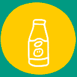
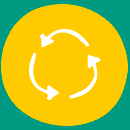
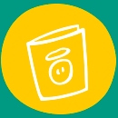
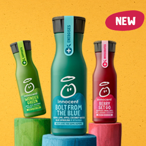
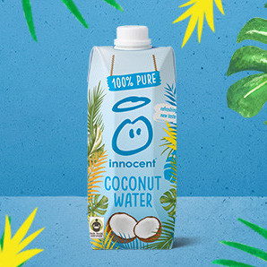
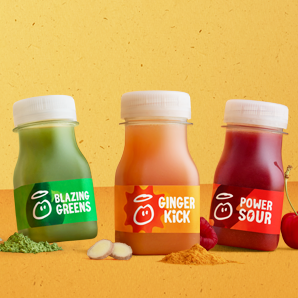

rinse, recycle, repeat
brighter bottles, brighter future
how we're taking responsibility for our packaging at innocent
Our mission has always been, and always will be, getting healthy drinks to people to help them live well and die old. At the moment, plastic bottles are the most sustainable way of doing that. We're on the case for making sure that plastic is treated in the right way so it has much less impact on the environment.

our brighter bottle
We’ve created an extra special bottle for our smoothies. It’s made from 50% recycled plastic and 15% plant plastic. By 2025, we plan to make all of our bottles out of 100% renewable stuff. We're already well on the way, so watch this space.

a recycling revolution
We’re excited to announce that we're a founding member of a pioneering new plastic initiative led by an environmental charity called WRAP along with the Ellen MacArthur foundation. It's all about being part of the recycling revolution.

the story so far
We’ve been front and centre of the recycling movement since we started using recycled plastic in our bottles 15 years ago. Every single thing we make is 100% recyclable and we’re encouraging everyone that drinks our drinks to recycle every bottle, every time.
Innocent plus. It’ll blow your mind.
Our best-tasting rainbow of blends boosted with vitamins to keep your body feeling tip-top. Made from a juicy blend of raspberries and cherries and boosted with goji berries & vitamins, it’ll help you go out there and give it everything you’ve got. Get ready to be the new Where’s Wally of the hide and seek circuit.

Coconut water. See for yourself.
Innocent coconut water is 100% pure coconut water and absolutely nothing else. Well, we’ve cracked it. We’ve made a deliciously fresh-tasting coconut water that’s the perfect natural thirst quencher. Just 100% pure coconut water and nothing else. No concentrates, sweeteners or anything added whatsoever.
Shop Now

Juice shots. Checkmate.
A mighty blend of fruit, veg & vitamins that really packs a punch. Armed with some sour cherries, raspberries, grapes and a few vitamins, they’ve managed to pack a lot of good stuff into a bottle that’s small enough to lose down the back of the sofa. Next time we’re packing for a two week camping trip in Dorset, we’ll know who to speak to.
Shop Now
